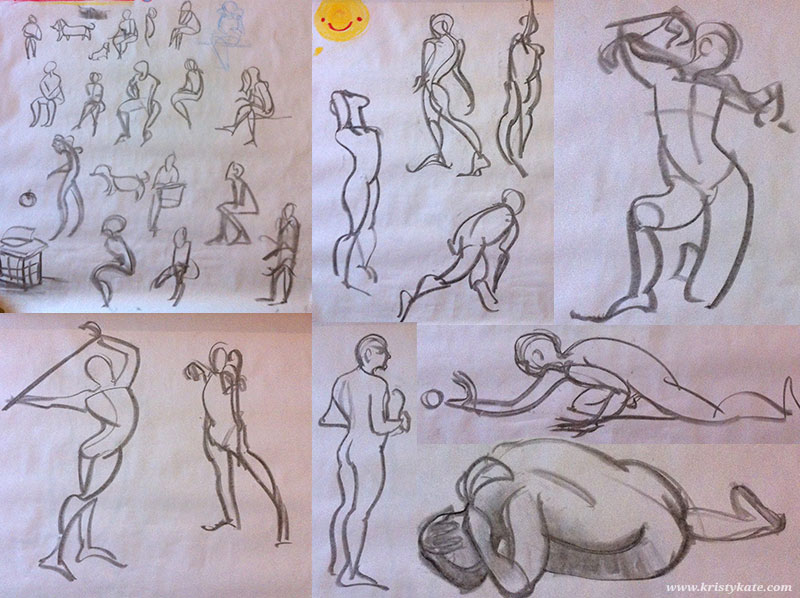
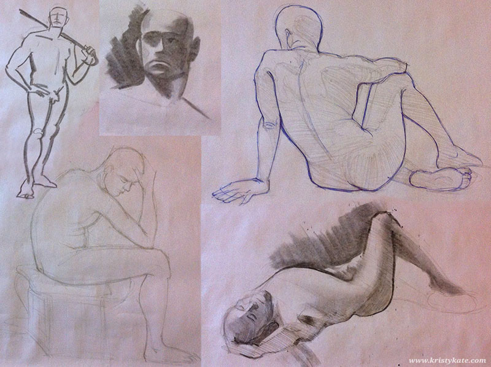
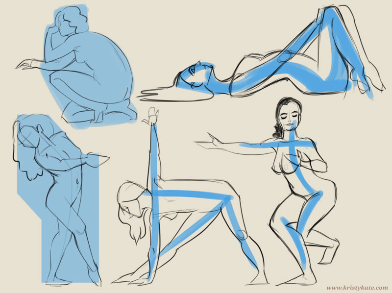
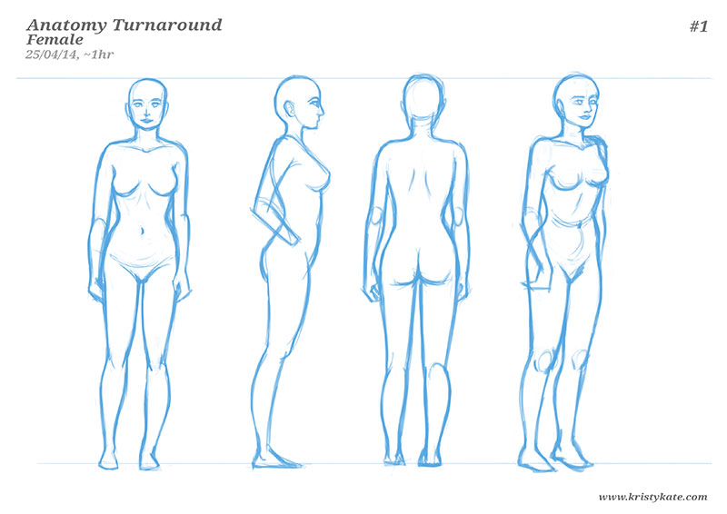
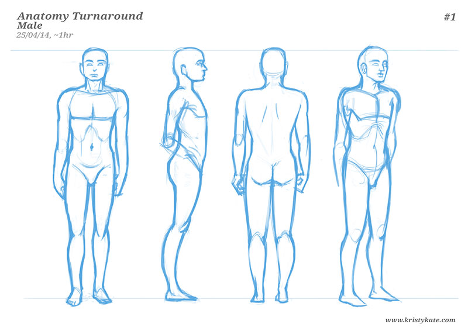

Week 4 & 5 Studies
April 14th - 27th
Happy (belated) Easter everyone! I hope you had a wonderful break with family and friends.
I have an admission to make - I didn't get much art study done over the past fortnight. Partly because I've resumed work on a really fun client project, but mostly for the fact that I'm currently lacking the habit of practicing art study and blogging, making them tricky to balance with other tasks.
Time to play boss over the weekend and find ways to make my week more conducive to art study and blogging. If anyone has tips or suggestions, I would love to hear them!
In the meantime, onto the studies I do have:
In week 4 I attended the No Vacancy life drawing class with my study buddy Leonie Yue. It was a really fun night, with a good mix of poses. The first image below shows sketches of 30sec-2min poses, while the second image were approx 10-20min poses.


Here are a few (~5min) figure studies completed at home using online reference. I experimented with drawing in shapes and the line of action (in blue) first to see if it could better inform observation.

Before the life drawing class, Leonie and I had a great conversation about anatomy studies and how to avoid lingering on one subject for too long. We realised that we both need an assessment component and came up with the idea of completing an anatomy turnaround sheet.
To elaborate; once a month, you gauge your understanding of anatomy by drawing a male and female turnaround (front, side, back, 3/4 view) from memory. On completion, you observe what is/isn't working with the anatomy and compile a list of areas to improve. Select a couple of the most difficult areas and focus on studying them over the month. With each subsequent turnaround you should hopefully experience (and see) greater ability in drawing the figure.
Below are my first turnarounds:


Let's be honest, they're pretty terrible, BUT I was anticipating far worse (stick figures, anyone?).
After reviewing the turnarounds, I felt these areas need improvement:
- Proportions (length of torso and legs, body widths)
- Waist-hip-leg connections (struggled visualising how they join together)
- Head (as always!)
- Hands & Feet (form and positioning)
- Centre of gravity (there's a nice forward tilt going on)
- Form of the whole body (3/4 view was the most intimidating to draw)
From the above list, I selected the following to study over the coming month:
- The proportions of the body,
- Waist-hip-leg relationship, and
- More face/head studies
Looks like I'll be studying Loomis' male and female proportion illustrations this month! Can't wait to see the progress I make in the next turnaround sheet.
+ + +
If you're studying anatomy, how about giving the turnaround exercise a go? Feel free to share your work in the comments or via Twitter or Facebook, I'd love to see the exercise helping others improve too!